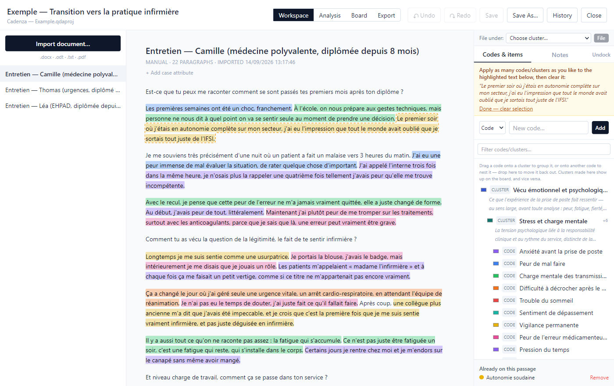

Vos entretiens, analysés sur votre ordinateur.
Your interviews, analysed on your own computer.
Cadenza est une application gratuite d'analyse qualitative. Codez, annotez et regroupez vos données pour une analyse thématique, une IPA ou une analyse par questionnement analytique.
Cadenza is a free qualitative data analysis app. Code, annotate and group your material for a thematic analysis, an IPA or an analysis through analytic questioning.
Autre système :Another system: Windows Mac Linux
Le téléchargement démarre. Quand il est terminé, suivez les étapes ci-dessous : un avertissement de sécurité va s'afficher, c'est normal. Your download is starting. When it finishes, follow the steps below: a security warning will appear, which is expected.
Cadenza s'installe sur un ordinateur, pas sur un téléphone ou une tablette. Ouvrez cette page depuis votre ordinateur pour le télécharger. Cadenza runs on a computer, not on a phone or tablet. Open this page on your computer to download it.
- GratuitFree
- Sans compteNo account
- Fonctionne hors ligneWorks offline
- Rien n'est envoyé nulle partNothing is sent anywhere
